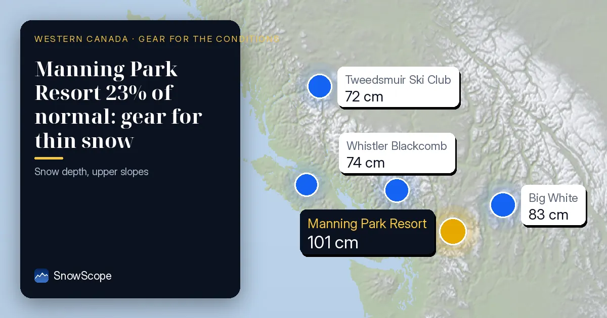

Manning Park Resort 23% of normal: gear for thin snow
Manning Park Resort is running at only 23% of its normal snow for mid-November, with thin cover across the region. When conditions are this sparse, your gear and strategy shift entirely: forget the deep-powder quiver and pack for crust, exposed base, variable conditions through the day, and the rocks that lie just beneath the surface.
See the live snow forecast for Manning Park Resort in the SnowScope appSnow depth, powder alerts and the 3D map, free.
What 23% of normal means on the ground
Manning Park's upper slopes hold 101 cm according to our snow model, but the weather station near the base measured just 7 cm—only 23% of the typical 30 cm for this date in past winters. The gap between model and station tells you something important: snow does sit at higher elevations, but the lower terrain is almost bare.
This is early-season snow at its most fragile, loose and weak, with rocks ready to end a run. The base sits at 1,359 m; below mid-mountain, you are skiing on dirt, rock, and whatever thin patches the mountain coughs up. Plan your runs around elevation. Skip the lower half of the mountain for now; you have only the top to work with.
| Resort | Snow depth | New snow, 72 h | Coming, next days | Top |
|---|---|---|---|---|
| Manning Park Resort | 101 cm | 6 cm | 3 cm | 1,789 m |
| Big White | 83 cm | 3 cm | 2 cm | 2,271 m |
| Whistler Blackcomb | 74 cm | 29 cm | 34 cm | 2,259 m |
| Tweedsmuir Ski Club | 72 cm | 38 cm | 15 cm | 1,650 m |
| Mount Cain Alpine Park | 60 cm | 14 cm | 22 cm | 1,616 m |

Rain crust will dominate today and tomorrow
Rain is forecast to fall on the snowpack today, with the freezing level reaching 3,180 m—above Manning Park's summit at 1,789 m. That means wet snow down to the very top, and a rain-crust layer forming as it refreezes tonight. This is a classic early-season pattern in maritime ranges: warmth from below, rain from above, then a hard freeze.
This crust can be breakable, boilerplate, or sticky depending on where you are and when you ski. Bring a full wax kit: purple or blue wax for crust, something stiffer for icy sections. Sharper edges than mid-winter snowpack work better. First light is your window; by mid-morning, the crust is gone or tracked out. Plan your day around dawn, not afternoon.
Thin snow across the whole region
Manning Park is not an outlier. Western Canada has 39 resorts with any snow at all out of 57 in the region—and that figure includes resorts clinging to upper-slope coverage only. Even high-altitude resorts are thin for November. Big White's upper slopes sit at 83 cm; Whistler Blackcomb, famous for maritime Pacific snow, holds just 74 cm on the top. The whole range is behind normal.
However, Whistler has bright spots: 29 cm fell in the last three days, and 34 cm is forecast before 14 November. Tweedsmuir Ski Club, the regional standout, received 38 cm in three days and faces daily melt-freeze cycles. So pockets of good snow exist, but most of Western Canada is running early. Snow access is uneven and forecast-dependent right now.
What freeze-thaw will do through the week
Manning Park will see only 3 cm of new snow through 14 November—not enough to change the picture or fill the gaps. But temperature swings will reshape what is there. The freezing level drops from 3,180 m today to 2,190 m by Friday, meaning the freeze-thaw cycle intensifies as the week goes on.
Upper slopes will harden overnight as the temperature swings are sharp; mid-mountain will soften by afternoon and refreeze at night. This cycling weakens the snowpack and creates unstable layers. Pack base layers for quick changes: thermal underwear that moves moisture away from your skin, a mid-layer for insulation and warmth, a waterproof shell on top. You will be removing and adding layers many times each day.
Essential gear for Western Canada right now
One ski or a small quiver is enough for these conditions: an edge-heavy all-mountain ski beats a fat powder board when snow is thin and variable. Rock skis are ideal. Carry base protectors as a backup; at 23% of normal, bases take damage fast and the repair bills add up quickly.
Bring multiple waxes—purple or blue for crust, red or hard wax for icy patches. A shovel and beacon belong in your pack if you plan any off-piste runs; early-season snow is unstable and unpredictable, and coverage is uneven across the terrain. Waterproof jacket and shell pants are essential—rain is falling on the mountains today, and melt-freeze cycles mean wet snow is coming through the week. Bring base protectors too; exposed rock is not uncommon right now.
Tips for skiers
- Stick to upper slopes at Manning Park today; the 101 cm model at elevation is your only real option, while the base region has just 7 cm. Avoid lower terrain until fresh snow arrives.
- Ski early and ski first light. Crust is manageable at dawn when the freezing level is 3,180 m; by mid-morning, the top layer is breakable and sticky.
- Use rock skis or carry base protectors. With only 23% of normal cover and 7 cm at the station, rocks lie close beneath the snow on most runs.
- If you venture off-piste anywhere in Western Canada, check the official avalanche bulletin before you go. Early-season snow is weak and prone to sliding on thin cover.
- Consider the forecast: only 3 cm is coming to Manning Park through 14 November. If fresh powder is your goal, Whistler Blackcomb (34 cm incoming) or Tweedsmuir Ski Club (recent heavy snow) are better bets this week.
About these numbers
Resort snow depths are the deepest snow on the resort's upper slopes from the SnowScope snow model (about 1 km, run of 11 November); they are estimates for an area, not a measurement at one point. Station values are measurements on the date shown. Forecasts can change. Always read the official avalanche bulletin before going off-piste.
Official avalanche bulletins: Avalanche Canada
Cite this report
For research, teaching or the press: the numbers and charts are free to reuse under CC BY 4.0 with this citation.
SnowScope (2026), Manning Park Resort 23% of normal: gear for thin snow, https://snowscope.app/blog/en/2026/11/western-canada-what-to-bring-ski-gear-conditions-11-november-2026.html, accessed 2026-11-11
SnowScope (Atlas Labs). (2026, November 11). Manning Park Resort 23% of normal: gear for thin snow. SnowScope snow reports. https://snowscope.app/blog/en/2026/11/western-canada-what-to-bring-ski-gear-conditions-11-november-2026.html
BibTeX
@misc{snowscope2026westerncanadawhattobring,
author = {{SnowScope (Atlas Labs)}},
title = {Manning Park Resort 23% of normal: gear for thin snow},
year = {2026},
month = nov,
howpublished = {\url{https://snowscope.app/blog/en/2026/11/western-canada-what-to-bring-ski-gear-conditions-11-november-2026.html}},
note = {Published 2026-11-11 18:44 UTC; accessed 2026-11-11}
}· CC BY 4.0 · Methods, data and tools →
Manning Park Resort: snow and temperature by height, this winter vs last (tools) →
Follow Manning Park Resort
Free: a message when fresh snow is coming, and the forecast every morning.
More snow reports

Whistler Blackcomb forecast to gain 47 centimetres by Saturday as snow arrives Thursday through the region, according to our model run on 4 November.

At Big White on 15 November, the upper slopes hold 68 cm near the summit while the base remains bare; an extreme vertical gradient typical of early season.

Western Canada mountains carry 42% of their normal snow for mid-November as of 12 November, but 142 cm is forecast over the next two weeks.